From Wozniak's garage to Tesla's gigafactory — how engineers turn capital and labor into output.
Dr. Richeng Piao
Department of Economics
Northeastern University — 100 min
Learning Objectives
By the end of class today, you will be able to…
7.1
Define a production function \(f(K, L)\) and its level sets (isoquants); state the free-disposal and convexity assumptions and explain what each one rules out. (Bloom L2)
7.2
Compute marginal products \(MP_K, MP_L\) and the marginal rate of technical substitution \(\text{MRTS}_{LK} = MP_L / MP_K\) for a Cobb-Douglas technology. (Bloom L3)
7.3
Classify a production function as exhibiting constant, increasing, or decreasing returns to scale using the Cobb-Douglas shortcut \(\alpha + \beta \lessgtr 1\). (Bloom L4)
7.4
Distinguish the three canonical families — Cobb-Douglas, Leontief, perfect substitutes — by isoquant curvature and substitution elasticity \(\sigma\). (Bloom L4)
7.5
Diagnose total factor productivity growth and Hicks-neutral technological change as a shift of the isoquant toward the origin, and read empirical evidence on the US labor-share decline. (Bloom L5)
Marginal rate of substitution \(\text{MRS} = MU_1/MU_2\)
Slutsky: substitution + income effects
Part III — Producer side (Ch 7–9)
Production function \(f(K, L)\)
Marginal product \(MP_K, MP_L\)
Marginal rate of technical substitution \(\text{MRTS}\)
(Ch 8) Cost minimization + (Ch 9) Profit max
The mathematical machinery is identical. Same Lagrangian, same envelope theorem, same comparative statics — just dual interpretations. Consumer maximizes utility subject to a budget; firm minimizes cost subject to an output target.
July 1976 — The Los Altos Garage
Two college dropouts in their twenties are trying to build a personal computer they can afford to sell.
Steve Wozniak — engineering. Designed the Apple I motherboard, hand-soldered the chips, debugged the firmware.
Steve Jobs — everything else. Sourced components, negotiated with Paul Terrell at The Byte Shop, set the price at $666.66.
By summer they were shipping ~50 units. By 1980, Apple was public.
Every recipe-and-input combination yields some maximum feasible quantity of finished boards per week. That mapping is the production function.
2066 Crist Drive, Los Altos — the Apple I garage
Jobs & Wozniak at the workbench
The Basics of Production — Final Goods
Production describes the process by which a person, company, government, or non-profit agency uses inputs to create a good or service for which others are willing to pay.
Final good — a good that is bought by a consumer.
Example: the Apple I, sold at $666.66 in July 1976.
THE APPLE I WENT ON SALE IN JULY 1976 AT A PRICE OF US$666.66
The Basics of Production — Intermediate Goods
Production describes the process by which a person, company, government, or non-profit agency uses inputs to create a good or service for which others are willing to pay.
Intermediate good — a good that is used to produce another good.
Example: the bare PCB and the MOS 6502 chip are intermediate goods used to produce the Apple I.
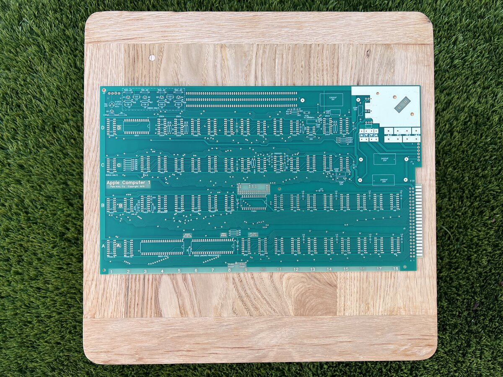
The Basics of Production — Four Factors
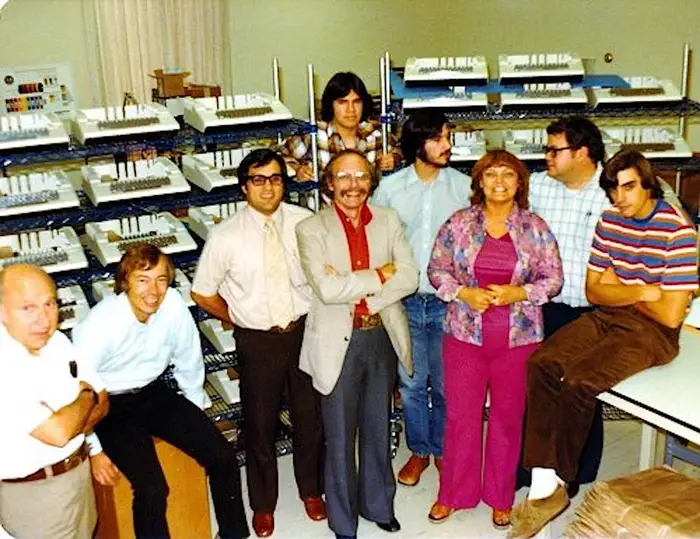
LABOR
All human resources used in production
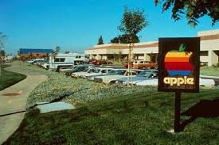
LAND
Physical site & natural resources
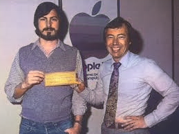
CAPITAL
Buildings, equipment, financial investment
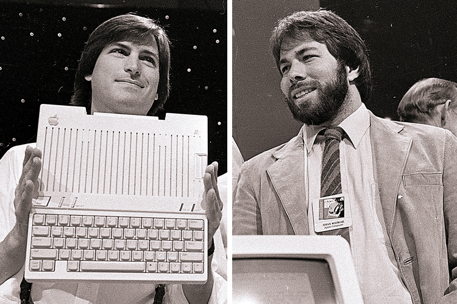
ENTREPRENEURSHIP
Vision, risk-taking, organizing the other factors
Questions Faced by Entrepreneur — the Part III Roadmap
1
Whether & how much to produce?
CH 9
2
How to choose between capital and labor?
CH 8
3
What will it cost to produce?
CH 8
4
How does the timeframe (SR vs LR) shape decisions?
CH 8
5
How does factory size limit the ability to scale up — and at what cost?
CH 8 & 10
The Basics of Production — Production Functions
A production function describes how output is made from different combinations of inputs.
General form
\[ Q \;=\; f(K, L) \]
\(Q\) — quantity of output
\(K\) — quantity of capital
\(L\) — quantity of labor
\(f\) is the firm's recipe — the technology that maps inputs to maximum-feasible output.
Cobb-Douglas (the workhorse)
\[ Q \;=\; A\, K^{\alpha}\, L^{\beta} \]
\(\alpha, \beta\) — each input raised to a power (typically \( < 1 \))
\(A\) — total factor productivity (technology level)
Inputs are multiplied together — both are required
Gigafactory anchor: \( Q = 8\, K^{0.4}\, L^{0.6} \). We'll lock these exponents for Chs 7-9.
Why Cobb-Douglas? It's smooth (well-defined marginal products everywhere), it has clean algebra (\(MP_K = \alpha \cdot Q/K\), \(MP_L = \beta \cdot Q/L\)), and it fits US manufacturing data remarkably well — the original Cobb & Douglas (1928) estimated \(\alpha \approx 0.25, \beta \approx 0.75\) for the US economy 1899–1922. We'll meet two other families — Leontief and perfect substitutes — in §7.5.
Same Product, Different Recipes: Ford
The same Ford Focus rolls out of three Ford plants on three continents — built with three different recipes. Each plant matches its mix of labor and capital to local input prices.
🇺🇸 Detroit, USA
Capital >> Labor
Heavy automation. ~700 industrial robots welding, painting, lifting frames. ~$30/hr labor cost makes machines cheap by comparison.
🇲🇽 Cuautitlán, Mexico
Capital ≈ Labor
Skilled-labor assembly with selective automation. Lower wages tilt the recipe back toward humans for tasks that would be robotic in Detroit.
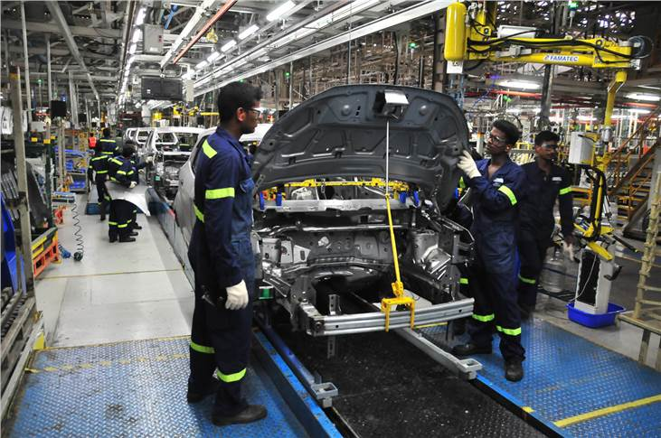
🇮🇳 Chennai, India
Labor >> Capital
Labor-intensive. Imported capital is expensive; local labor is abundant and cheap. Same blueprints, different ratios on the line.
The takeaway: same product, three recipes — each chosen because it's the cheapest recipe given that location's prices for labor vs. capital. Production methods are responses to prices.
Five Decades Later — Tesla's Gigafactory Nevada
The scale changed; the question didn't. To turn capital and labor into battery capacity, engineers still pick a specific configuration.
How many cell-stacking machines?
How many drying rooms?
How many QA technicians per shift?
Each combination of capital and labor delivers some maximum feasible battery output \(Q\).
Our anchor for Part III: a representative US gigafactory with \(K = 4\) B$ of capital, \(L = 4{,}000\) workers, producing \(Q = 32\) GWh/yr under \(Q = 8 K^{0.4} L^{0.6}\). These numbers are locked through Chs 8 and 9.
Tesla Gigafactory Nevada — Planet Labs / Wikimedia
Note on the 0.4 / 0.6 calibration.
\(\alpha\) and \(\beta\) are technology exponents — they measure how output responds to changes in \(K\) and \(L\) (output's elasticity w.r.t. each input), not the physical quantities of \(K\) or \(L\) themselves. BLS NAICS 3359 (Batteries) puts real US plants closer to \(\alpha \approx 0.55, \beta \approx 0.45\) within the \(K+L\) portion of value added — modestly more capital-intensive than our 0.4 / 0.6 anchor. We round to 0.4 / 0.6 to keep Walkthrough arithmetic clean and to match the historical US-economy aggregate labor share.
It's Not Enough to Do Things Right; We Must Do the Right Things
— Peter Drucker. Two distinct kinds of efficiency, easy to confuse.
Production Efficiency
Doing things right
Same output, fewer inputs. No waste — you couldn't remove an input without losing output.
Example: A bridge engineering team that delivers the same load capacity using 10% less steel. Same output. Less waste.
Geometrically: any point on the production frontier (isoquant).
Allocative Efficiency
Doing the right things
Resources flow to the mix of goods people actually want, in the quantities they want. Relevance.
Cautionary tale: a 2026 typewriter factory could be production-efficient — and still allocatively wasteful, because no one wants typewriters.
Driven by price signals — revisits in Ch 9–10.
The two ideas are independent. You can have either one without the other. A market economy needs both: minimize waste and maximize relevance.
Production Methods (a.k.a. Production Technology)
Same four ingredients, different recipes. The recipe — how much of each input you use — is what economists call technology. There is rarely one right answer.
Capital-Intensive
🚜 Industrial Farming
$$ machines + very few workers per acre. Iowa corn: 2 people farm 2,000 acres — tractors, GPS, drones replace labor.
Labor-Intensive
💻 SaaS Companies
Highly trained workers + cheap capital (laptops, cloud). A 50-person team at a software firm builds a $1B product.
Cobb-Douglas: same form \( Q = A K^{\alpha} L^{\beta} \), different exponents
Capital-intensive
\( K^{0.7}\, L^{0.3} \)
Gigafactory
\( 8\, K^{0.4}\, L^{0.6} \)
Labor-intensive
\( K^{0.2}\, L^{0.8} \)
The Long Arc of Production
For nearly all of human history, production grew slowly. A medieval English peasant had roughly the same yearly output as her great-grandmother — for centuries on end. Generations passed; the typical person's standard of living barely moved. Then, around 1800, the Industrial Revolution (Arkwright's water frame, 1769; Watt's steam engine, 1776) multiplied what a single hour of labor could produce.
Figure 7.X — World Average GDP per Capita, 1500–2000 (log scale, 1990 international $)
Caption: World average real GDP per capita on a log scale. For three centuries before 1800, output per person barely moved — humanity lived close to subsistence. The vertical guide marks the onset of the Industrial Revolution; the line bends upward and rises by roughly an order of magnitude in two centuries. Each technology leap (steam, electricity, internal combustion, computing) shifts the production function outward, and the same hours of labor produce far more output. Source: Maddison Project Database (Bolt & van Zanden 2024); DeLong (1998) for early-period estimates. Values in 1990 international dollars.
§7.2 The Production Function
isoquants · free disposal · convexity
Simplifying Assumptions about Firms
Nine working assumptions, grouped four ways — each buys algebraic transparency at the cost of some empirical bandwidth.
The firm's product
The firm produces a single good.
The firm has already chosen which product to produce.
→ \(Q\) is a scalar. Multi-product firms wait for grad IO.
Firm behavior
Firms minimize cost at every level of production.
→ Necessary condition for profit max. Ch 8 turns this into the Lagrangian.
Inputs & technology
Two inputs only: capital \(K\) & labor \(L\).
More inputs → more output.
Inputs show diminishing returns.
→ The pillars of MP, MRTS, isoquants.
Time & markets
SR: \(K\) fixed; LR: both adjust.
Unlimited \(K, L\) at fixed input prices.
Capital markets work — no budget constraint.
→ Firm = pure tech + price-taker.
The Production Function
\[ Q = f(K, L) \]
Maps inputs \(K\) (capital) and \(L\) (labor) to maximum feasible output \(Q\).
Three properties we'll assume throughout the chapter:
Free disposal
\(\partial f/\partial K \geq 0, \;\; \partial f/\partial L \geq 0\)
Each extra unit of an input adds less than the last.
Convexity
Upper-contour set is convex.
Mixing recipes is at least as productive as extremes.
Heads up: the function returns the maximum output, not the typical or average output. Real firms underperform — that's a measurement problem, not a property of the technology frontier.
SR
What can you produce when only labor is flexible?
Business Proposal — Doubling Boba Output for a 2-Week Festival
Scenario. A music festival lands in town in 2 weeks. Our market research forecasts demand for boba drinks will double for the duration. The owner asks: can we meet it — and which plan should we run with?
Current capacity
400 / hr
1 shaker · 3 workers · today's recipe
Festival target
800 / hr
2× demand for the next 2 weeks
Plan A — more labor
Extra shift + temp hires. Available in days. Cost: payroll only.
Plan B — second shaker
Order, install, train. ~6 weeks lead time. Misses the festival.
Recommendation
Run Plan A. Capital can't change inside the 2-week window — the new shaker can't be ordered, installed, and tested in time. The only feasible margin is labor.
This is the Short Run in one sentence: \(K = \bar K\) is fixed; \(L\) is the only variable. The production function collapses to \(Q = f(\bar K, L) = TP(L)\), and the question becomes how many extra workers to hire — until \(MP_L\) drops to zero.
Bridge to the math. The next slides walk through this proposal numerically: how much extra \(Q\) does each additional worker add, where does \(MP_L\) peak, and at what point should the owner stop hiring even though demand is unmet?
Production in Practice — A Boba Tea Shop
Every firm is an inputs → production-function → output machine. Here's what that looks like for a real one.
SR question, applied. The shop's capital (machines, store layout, equipment) is bolted in. Over the next 90 minutes, only labor — how many baristas on shift — is adjustable. So we collapse \(Q = f(K, L)\) to \(Q = f(\bar K, L) = TP(L)\) and study the one-variable problem on the next slide.
Production Function in the Short Run — A 2-Week Demand Spike
A festival is coming — demand for boba drinks doubles for two weeks.
Higher demand for two weeks — we need to produce more drinks temporarily.
The most plausible way is to add more labor hours:
Add an extra shift for existing employees.
Hire a few new staff members for the festival.
Capital (the boba machine, the shop floor) can't change in 2 weeks — that's the Short Run.
Total Product (TP). The total output produced with a given amount of labor — \(TP(L) = f(\bar K, L)\).
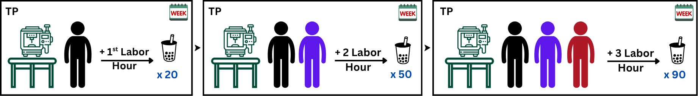
Boba SR — Total & Average Product
Read off output at each labor level. \(TP\) is total output; \(AP_L = TP / L\) is output per worker.
K
L
TP
\(AP_L\)
1
0
0
—
1
1
20
20.0
1
2
50
25.0
1
3
90
30.0
Production curve (slope = \(MP_L\))
TP rises sharply; \(AP_L\) rises gently. We'll add \(MP_L\) on the next slide.
What to notice. The total-product curve is convex here (rising at an increasing rate). The average-product per worker is also rising. Why? Specialization — each new worker can take on a focused role. The next slide adds \(MP_L\) (the slope of TP) and tells the full rising-returns story.
Production in the Short Run
With capital bolted to the floor, the firm can adjust only labor. The short-run production function collapses to one variable:
\( Q \;=\; TP(L) \;=\; f(\bar K, L) \)
Fixed input
Cannot change in SR. (Capital: factory, ovens, robots.)
Variable input
Can change in SR. (Labor: shifts, overtime, hiring.)
Long run forward-pointer: when \(K\) becomes adjustable too, every input is a choice variable — the full \(f(K, L)\) is back, and we get the cost-min Lagrangian of Ch 8.
Heads up: SR is NOT a clock-time concept
"Short run" and "long run" are defined by which inputs are flexible, not how much time has passed.
1 day (one tutor + one whiteboard is K; sessions are L)
Institutional content = "what's flexible," not "how long has it been."
Average Product — A Key Short-Run Metric
With \(K = \bar K\) fixed, total output \(Q\) depends only on labor: \(Q = f(\bar K, L)\). The natural productivity metric is output per worker — the average product of labor.
Definition
Average product of an input = total output divided by the quantity of that input used.
\[ AP_L \;=\; \dfrac{Q}{L} \]
Units: output per worker (or per worker-hour, depending on how \(L\) is measured).
Same idea as a batting average — per-unit performance, not total.
Each worker produces an average of 20 motherboards per week at this scale.
Why average product matters. \(AP_L\) is the natural single-number summary of how productive labor is on this particular plant. Gigafactory check: with \(Q = 32\) GWh/yr and \(L = 4{,}000\) workers, \(AP_L = 8\) GWh per thousand workers (or 8,000 kWh per worker per year). We'll see how AP and MP fit together in the §7.6 three-stage diagram.
§7.3 Marginal Products & MRTS
two slopes · their ratio · the engine of the chapter
Marginal Product of Labor — Increasing Returns at First
Marginal product of labor \((MP_L)\): the change in output from one more unit of labor. \(MP_L = \Delta Q / \Delta L\).
Boba shop, K̄ = 1 machine
K
L
TP
\(MP_L\)
1
0
0
—
1
1
20
20
1
2
50
30
1
3
90
40
Production curve (slope = \(MP_L\))
Slope of TP at each labor level is \(MP_L\) — and it's rising.
Returns to labor
Increasing marginal returns
Each additional worker adds more to output than the previous one.
20 → 30 → 40
Why? Specialization — one person can rinse cups while another shakes the drink while another rings up the customer.
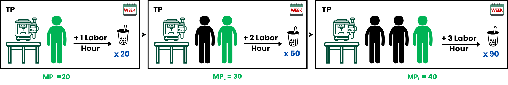
Then \(MP_L\) Diminishes — and Eventually Turns Negative
Boba shop, K̄ = 1, extended to L=6
K
L
TP
\(MP_L\)
1
0
0
—
1
1
20
20
1
2
50
30
1
3
90
40
1
4
120
30
1
5
140
20
1
6
120
−20
TP rises, peaks, falls
TP peaks at L=5; the 6th worker is in the way.
Returns to labor
Diminishing marginal returns
Each additional worker adds less than the previous.
40 → 30 → 20
Negative marginal returns
The 6th worker reduces total output — they're getting in the way.
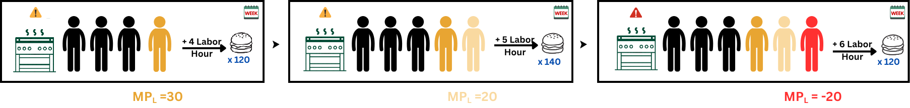
This is the classical three-stage diagram. Stage I (L=1-3): MP rising. Stage II (L=4-5): MP positive but falling. Stage III (L=6+): MP < 0 — no rational owner hires here. Why does this happen? The next slide answers: capital is fixed.
Why \(MP_L\) Diminishes — Capital Is Bolted In
Shaker capacity (the binding input)
One shaker. Each session takes 18 seconds and yields 2 shakes.
Sessions per hour: \(3600 \div 18 = \mathbf{200}\)
Shakes per hour: \(200 \times 2 = \mathbf{400}\) drinks
The hard ceiling. The shop can make at most 400 drinks/hour with one shaker — no matter how many workers it hires.
Why this is the Short Run
The owner can't add a second shaker in 2 weeks — it takes time to plan, order, install, and train on the new machine.
Until then, more labor → more workers waiting for the same shaker → diminishing \(MP_L\).
SR definition, applied. \( Q = f(\bar K, L) = TP(L) \). Only labor moves; capital is fixed at \(\bar K = 1\) shaker.
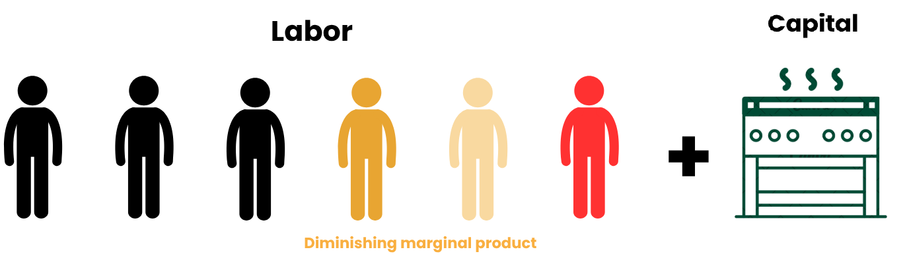
Average Product — The Full Picture
K = 1
L
TP
\(AP_L\)
\(MP_L\)
1
0
0
—
—
1
1
20
20.0
20
1
2
50
25.0
30
1
3
90
30.0
40
1
4
120
30.0
30
1
5
140
28.0
20
1
6
120
20.0
−20
\(AP_L = TP/L\); peak at \(L = 4\) where \(MP_L = AP_L = 30\).
Total Product (TP)
Marginal Product (MP) & Average Product (AP)
The identity to remember. \(MP_L > AP_L \Rightarrow AP_L\) rising. \(MP_L < AP_L \Rightarrow AP_L\) falling. \(MP_L = AP_L\) at the AP peak (here, \(L = 4\)).
Marginal Product — What One More Worker Adds
Marginal product is the additional output a firm produces from one more unit of an input, holding all other inputs constant.
\[ MP_L \;=\; \dfrac{\Delta Q}{\Delta L} \]
Diminishing marginal product: as more of a variable input is hired against a fixed input, each additional unit eventually adds less than the one before it.
Labor
+
Capital
only 4 sets
=
Output Q
Numerical SR Example — Plug \(\bar K = 4\) into Cobb-Douglas
Take the simplest Cobb-Douglas form and fix capital at the Apple Garage's 4 workstations:
Output now depends on labor alone — a one-variable function we can tabulate, plot, and differentiate.
The Apple Garage — 4 workstations
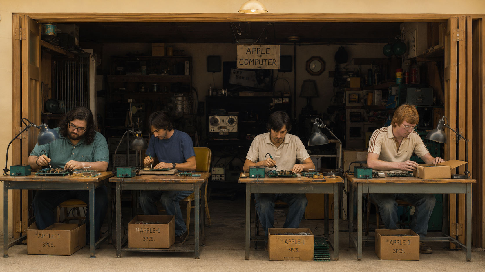
\( \bar K = 4 \) workbenches with soldering iron + multimeter (fixed)
Short-Run Production at the Apple Garage
Holding \(\bar K = 4\), step \(L\) from 0 to 5 and read off \(Q\), \(MP_L\), \(AP_L\) for \( Q = 2\sqrt{L} \).
Capital, \(\bar K\)
Labor, \(L\)
Output, \(Q\)
\(MP_L = \dfrac{\Delta Q}{\Delta L}\)
\(AP_L = \dfrac{Q}{L}\)
4
0
0.00
—
—
4
1
2.00
2.00
2.00
4
2
2.83
0.83
1.42
4
3
3.46
0.63
1.15
4
4
4.00
0.54
1.00
4
5
4.47
0.47
0.89
Diminishing marginal product in action. The 1st worker adds 2.00 to output; the 5th adds only 0.47. Each new worker has less of the fixed capital to work with — \(MP_L\) shrinks monotonically as \(L\) rises. Note also: \(AP_L > MP_L\) for every \(L \geq 1\), so \(AP_L\) is also falling (the manuscript §7.6 identity \( dAP_L/dL = (MP_L - AP_L)/L \) at work).
Visualizing the Marginal Product of Labor
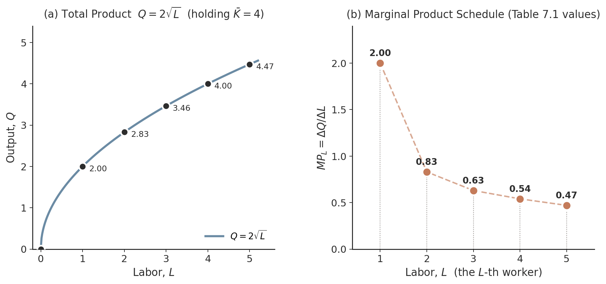
Left panel — \(TP(L) = 2\sqrt{L}\)
The total-product curve rises with \(L\) but at a decreasing rate. The black dots mark the six Table 7.1 outputs — \(Q = 0,\ 2.00,\ 2.83,\ 3.46,\ 4.00,\ 4.47\) at \(L = 0,1,\ldots,5\).
Right panel — \(MP_L\) plotted directly
\(MP_L = \Delta Q / \Delta L\) at each new worker. The Table 7.1 schedule falls monotonically from 2.00 at \(L=1\) to 0.47 at \(L=5\) — diminishing marginal product.
Walkthrough 7.3 — Cobb-Douglas TP/AP/MP at Fixed \(\bar K\)
Industry context. A US solar-panel assembly plant (NAICS 335 advanced manufacturing) runs Cobb-Douglas \(Q = K^{0.4} L^{0.6}\), where \(Q\) is panels/year, \(K\) is units of robotic assembly equipment, and \(L\) is workers. Capital is fixed at \(\bar K = 100\) assembly stations until the next plant-expansion review. What do TP, AP, and MP look like as functions of labor alone — and does the classical three-stage diagram emerge?
Problem & Set up.
Substitute \(\bar K = 100\): the constant is \(100^{0.4} \approx 6.3096\), so \(TP(L) = 6.3096 \cdot L^{0.6}\). Derive closed forms for \(AP, MP\) and tabulate.
Dividing: \(\dfrac{MP(L)}{AP(L)} = \dfrac{3.7857 L^{-0.4}}{6.3096 L^{-0.4}} = \mathbf{0.6 = \beta}\) for every \(L > 0\).
\(MP\) is always proportional to \(AP\) with constant ratio \(\beta\). The two curves never cross.
Step 3 — Tabulate
\(L\)
\(TP\)
\(AP\)
\(MP\)
1
6.31
6.31
3.79
4
14.50
3.62
2.17
9
23.58
2.62
1.57
16
33.30
2.08
1.25
25
43.53
1.74
1.04
Every row: \(MP/AP = 0.6\). ✓
Check. \(TP\) is increasing but concave; \(AP\) and \(MP\) both decline monotonically; neither has an interior maximum. Takeaway.Cobb-Douglas does NOT produce the classical three-stage diagram. No rising-then-falling \(MP\), no \(MP=AP\) crossing, no \(MP < 0\) region. The next slide (W7.4) introduces the cubic form that does deliver the classical geometry.
§7.6 — Total, Average, and Marginal Product
Fix \(K = \bar K\) (short run). The short-run production function \(TP(L) = f(\bar K, L)\) has three derivative curves — the classical three-stage diagram.
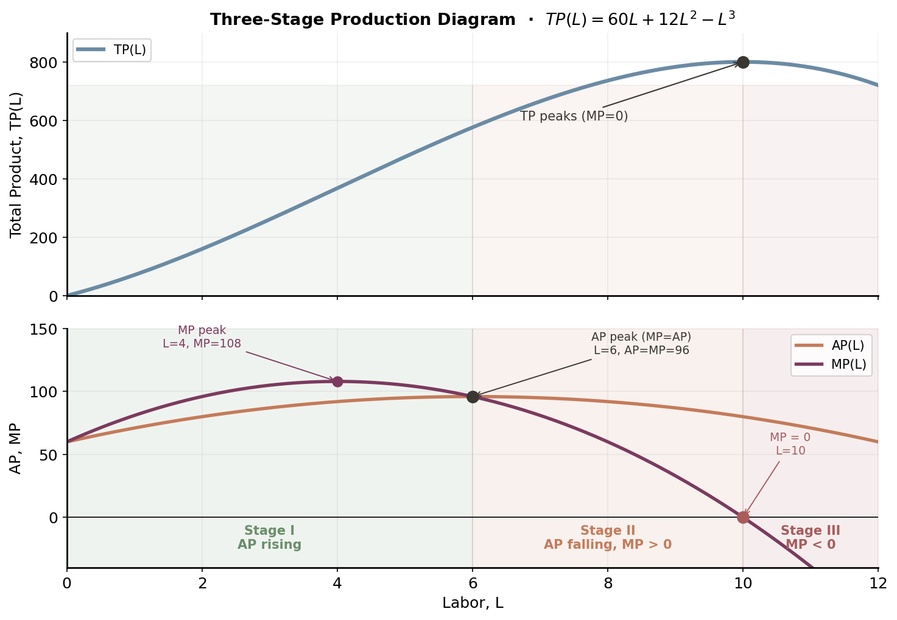
Definitions.
\(TP(L) = f(\bar K, L)\)
\(AP(L) = TP(L)/L\)
\(MP(L) = dTP/dL\)
AP ↔ MP identity.
\( \dfrac{dAP}{dL} = \dfrac{MP - AP}{L} \)
\(MP > AP \Rightarrow AP\) rising; \(MP < AP \Rightarrow AP\) falling; \(MP = AP\) at AP's peak.
Cubic spec from W7.8: \(TP = 60L + 12L^2 - L^3\). MP peaks at \(L=4\); AP peaks at \(L=6\) where MP crosses AP; MP=0 at \(L=10\).
Walkthrough 7.4 — Cubic TP and the Three Stages
Meet Sam, plant manager at a furniture-assembly shop with a fixed factory floor and \(\bar K\) machines. Short-run output follows \(TP(L) = 60L + 12L^2 - L^3\) on \(L \in [0, 13]\). Her HR director asks: "How many workers should we hire today — and at what headcount do extra workers stop helping?"
Problem.
Find the three stage boundaries: where \(MP\) peaks, where \(MP = AP\) (AP peak), and where \(MP = 0\) (Stage III boundary).
Takeaway. The classical three-stage diagram needs enough curvature for \(MP\) to rise then fall. Cubic does it; smooth Cobb-Douglas only delivers monotone declining \(MP\). Stage II (\(6 < L < 10\)) is the economically relevant region — Ch 8 will show cost minimization always lands here.
\( MP_L \) — From Discrete Difference to Derivative
Quick check at \(L = 4\): the calculus says \(MP_L = 1/\sqrt{4} = 0.50\). The discrete table says \(MP_L = 0.54\) (the row-to-row jump from \(L=3\) to \(L=4\)). The two agree to about 8% — the discrete value is slightly larger because it averages the slope across a finite \(\Delta L = 1\) interval. As \(\Delta L \to 0\), they coincide.
LR
What can you produce when every input is flexible?
Production in the Long Run — The Full \(K \times L\) Grid
In the long run, both \(K\) and \(L\) are choice variables. The table below shows \(Q = \sqrt{K \cdot L}\) for every \((K, L)\) combination from 1 to 5. The K=4 row (highlighted) is the SR slice we tabulated on page 24.
K \ L
L = 1
L = 2
L = 3
L = 4
L = 5
K = 1
1.00
1.41
1.73
2.00
2.24
K = 2
1.41
2.00
2.45
2.83
3.16
K = 3
1.73
2.45
3.00
3.46
3.87
K = 4 (SR)
2.00
2.83
3.46
4.00
4.47
K = 5
2.24
3.16
3.87
4.47
5.00
The LR substitution insight. The same output \(Q = 4.47\) shows up in two cells: \((K=4, L=5)\) and \((K=5, L=4)\). In the SR, only the K=4 row is available — you'd need 5 workers. In the LR, you can buy a 5th workstation and run it with 4 workers. Same output, different recipe. Every isoquant is the set of cells in this table that share a Q value.
Isoquants — Curves of Equal Output
An isoquant is the set of input combinations \((K, L)\) that produce a given level of output \(\bar Q\).
\[ \{(K, L) : f(K, L) = \bar Q\} \]
From the LR grid on page 28: trace the cells with the same \(Q\) value. They form a smooth curve in \((L, K)\) space.
\(Q = 4\): pass through \((4, 4)\) and many others
Higher \(Q\) → isoquant farther from the origin. They never cross.
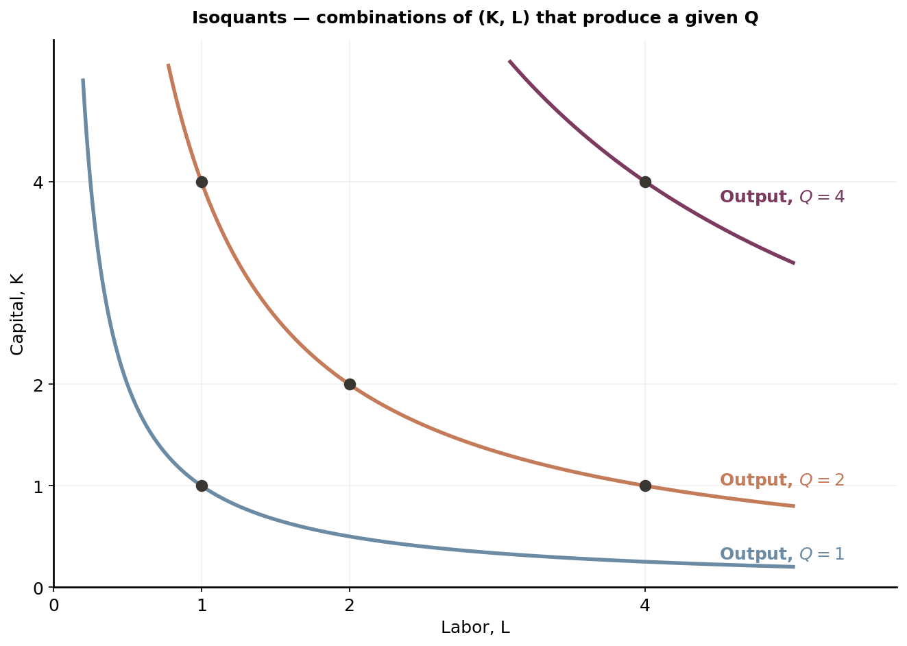
Marginal Products — The LR Cost-Min Setup
In the long run, all inputs are flexible — the firm can pick any \((K, L)\) combination. The goal is to minimize cost for a given output. That choice depends on two things:
Input prices (\(w\) for labor, \(r\) for capital) — set by the labor and capital markets.
Marginal products (\(MP_L, MP_K\)) — how much extra output each input adds, set by the firm's technology.
Marginal product of an input = factor share × average product. We'll use this constantly.
You Try! — Which Combos Are on the Same Isoquant?
The gigafactory's production function is \( Q = 8\sqrt{K L} \). The chapter's anchor produces \( Q = 32 \) GWh/yr. Which of the candidate \((K, L)\) combinations below lie on the same isoquant?Hint: same Q means same \( K \cdot L \).
Candidate
\(K\)
\(L\)
\(K \cdot L\)
\(Q = 8\sqrt{K L}\)
On \(Q=32\)?
(a)
4
4
16
32
YES ✓
(b)
8
2
16
32
YES ✓
(c)
2
8
16
32
YES ✓
(d)
5
5
25
40
no ✗
(e)
3
6
18
33.9
no ✗
The isoquant for \( Q = 32 \) is the hyperbola \( K = 16/L \). Any \((K, L)\) with \( K \cdot L = 16 \) sits on it.
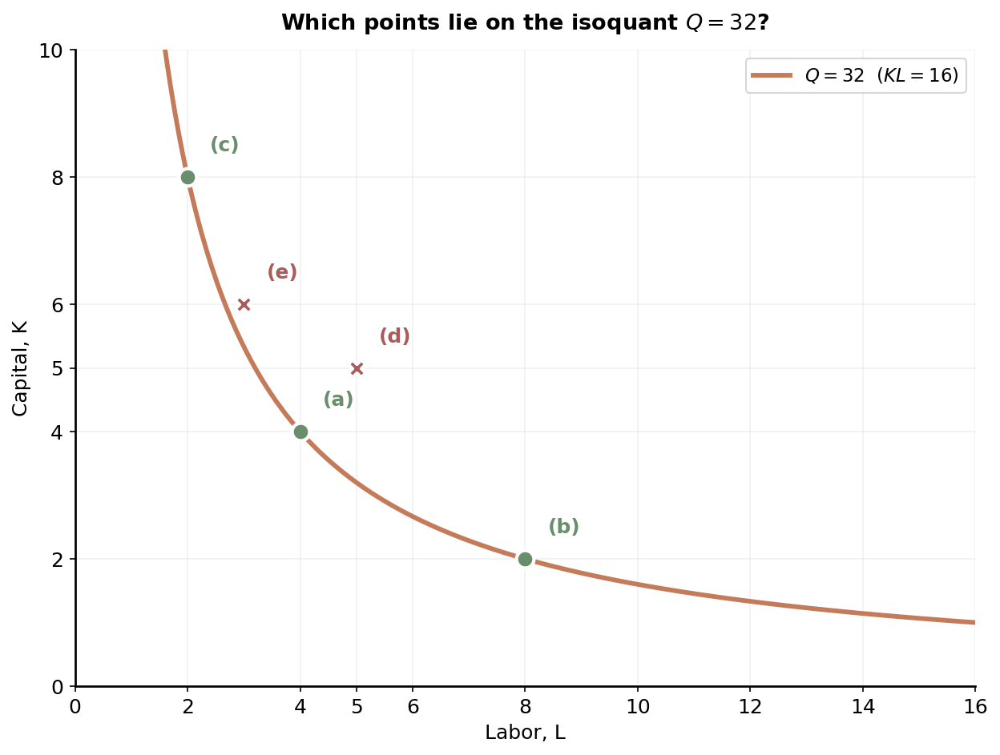
Takeaway. All bundles with \( K \cdot L = 16 \) produce the same 32 GWh. Three very different recipes — (a) balanced (4, 4), (b) capital-heavy (8, 2), (c) labor-heavy (2, 8) — share the isoquant. Which one minimizes cost depends on input prices, the Ch 8 question.
The Marginal Rate of Technical Substitution
The slope of an isoquant describes how inputs may be substituted to keep output fixed. We call it the marginal rate of technical substitution — \(\text{MRTS}_{LK}\) is the rate at which the firm trades labor for capital, holding \(\bar Q\) constant.
Derivation along an isoquant
Along an isoquant, total output is constant, so the change in \(Q\) from any small move \((\Delta K, \Delta L)\) is zero:
\( \Delta Q \;=\; MP_L \cdot \Delta L \;+\; MP_K \cdot \Delta K \;=\; 0 \)
Rearrange to find the slope of the isoquant:
\( MP_K \cdot \Delta K \;=\; -MP_L \cdot \Delta L \;\Longrightarrow\; -\dfrac{\Delta K}{\Delta L} \;=\; \dfrac{MP_L}{MP_K} \)
Moving down an isoquant: \(K\) declines, the slope gets smaller. The firm has less capital, so each remaining unit of \(K\) is relatively more productive.
Sign convention: the isoquant slopes downward (\(dK/dL < 0\)). MRTS is reported as the positive magnitude — we add the minus sign.
Walkthrough 7.1 — Priya's MRTS at Tesla Nevada
Meet Priya, ops planner at Tesla's Nevada gigafactory. Q4 target: \(Q = 32\) GWh from the installed bundle \((K, L) = (4, 4)\) — $4B of capital, 4,000 workers. Finance asks: "If we delay $1B of capital, how many extra workers do we need to hold output at 32 GWh?" Her answer is the \(\text{MRTS}_{LK}\) at the current point — and at a labor-intensive alternative \((K, L) = (2, 11.31)\).
Problem & Set up.
Production technology: \( Q = 8 K^{0.4} L^{0.6} \). Compute \(MP_K\), \(MP_L\), \(\text{MRTS}_{LK}\) at (a) \((4, 4)\) and (b) \((2, 11.31)\). Cobb-Douglas shortcut: \(MP_K = \alpha\,\tfrac{Q}{K},\; MP_L = \beta\,\tfrac{Q}{L},\; \text{MRTS}_{LK} = \tfrac{\beta}{\alpha}\cdot\tfrac{K}{L}\).
Labor is already abundant — the next worker is barely worth a quarter-billion in capital.
Check. Both points sit on the \(Q = 32\) isoquant: \(8 \cdot 4^{0.4} \cdot 4^{0.6} = 32\) ✓ and \(8 \cdot 2^{0.4} \cdot 11.31^{0.6} \approx 32\) ✓.
Takeaway. Slide down the isoquant (more \(L\), less \(K\)) → \(K/L\) falls → MRTS falls from 1.5 to 0.265. The isoquant flattens: when labor is abundant, you need many more workers to substitute for one unit of capital. Diminishing MRTS.
Walkthrough 7.2 — Cobb-Douglas Isoquant Slope at a Point
Meet Liam, a teaching assistant who tells students: "There are two ways to get the MRTS — an implicit-diff slope of the isoquant, and the ratio \(MP_L/MP_K\). They had better agree." He picks \(Q = K^{0.5} L^{0.5}\), the isoquant for \(\bar Q = 10\), and the point \(L = 5\). Watch.
Problem & Set up.
Production: \(Q = K^{0.5} L^{0.5}\). Solve \(K^{0.5} L^{0.5} = 10\) for the isoquant: \(K = 100/L\) (a hyperbola). Compute the slope at \(L = 5\) two ways.
Check. Both methods give \(\text{MRTS} = 4\). Move along the isoquant to \(L = 10\): \(K = 10\), MRTS \(= 1\). To \(L = 20\): \(K = 5\), MRTS \(= 0.25\). Takeaway. MRTS depends on position on the isoquant — as \(L\) grows, MRTS shrinks. The two methods (implicit diff and \(MP_L/MP_K\)) are equivalent statements of the same calculus identity. Use whichever is easier for the given production function.
§7.4 Returns to Scale
double all inputs · what happens to output?
Returns to Scale — A Concrete Cobb-Douglas Example
Returns to scale refers to the change in output when all inputs are increased in the same proportion.
Returning to the Cobb-Douglas production function:
\( Q = K^\alpha L^\beta \)
Click through Step 1 → Step 2 → takeaway.
Step 1 — Plug in
If \(\alpha = \beta = 0.5\), then
\( Q = K^{0.5} L^{0.5} \)
At \(K = 2,\ L = 2\):
\( Q = 2^{0.5} \cdot 2^{0.5} = 2 \)
Step 2 — Double both inputs
What happens at \(K = 4,\ L = 4\)?
\( Q = 4^{0.5} \cdot 4^{0.5} = 2 \times 2 = 4 \)
→ Output doubles!
The pattern. Inputs scaled by \(t = 2\); output scaled by \(t = 2\). This is constant returns to scale. Change the exponents and we get a different verdict — the full taxonomy is on the next slide.
Three Scenarios — Doubling Both Inputs
Increase all inputs by a factor \(t > 1\). Compare the output change to the input change:
Click to reveal each scenario — then arrow down ↓ for a real-life example of each.
CRS
\(f(tK, tL) = t \cdot f(K, L)\)
Constant returns. Output scales 1-for-1 with inputs.
Double inputs → output doubles.
IRS
\(f(tK, tL) > t \cdot f(K, L)\)
Increasing returns. Output rises more than proportionally.
Double inputs → output more than doubles.
DRS
\(f(tK, tL) < t \cdot f(K, L)\)
Decreasing returns. Output rises less than proportionally.
Double inputs → output less than doubles.
Cobb-Douglas shortcut. For \(Q = A K^\alpha L^\beta\):
Returns to scale is a long-run / global concept — it scales all inputs together. Distinct from diminishing marginal product, which holds one input fixed. Next sub-slide ↓ visualizes the three cases side-by-side; then 3 real-life examples.
Doubling Inputs — Visualizing the Three Cases
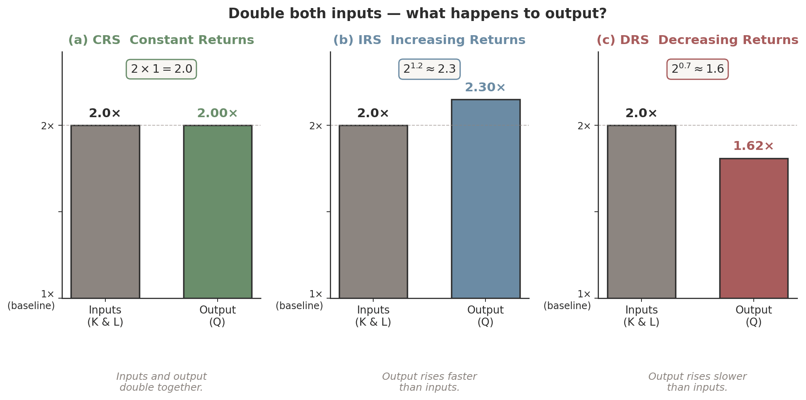
Each panel: grey bar = input multiplier (2×); colored bar = output multiplier. The dashed line at 2× is the CRS reference. Next ↓ — a real-life example for each case.
CRS in Real Life — Tesla's Gigafactory Network
The story
Tesla's Gigafactory Nevada produces 32 GWh/year of batteries from \(K = \$4\text{B}\) and \(L = 4{,}000\) workers. Gigafactory Texas — same layout, same staffing.
Why CRS works here. Manufacturing recipes replicate cleanly. Running two identical recipes makes twice the output — the "replication argument," and the reason CRS is the default for competitive industries.
Gigafactory Nevada (aerial). Cloning the building & recipe in Texas exactly doubles total US output.
Doubling \(K, L\) moves \(Q\) from 5 to 11.49 — a 2.30× jump, well above the linear CRS reference.
DRS in Real Life — North Sea Oil Drilling
The story
Equinor's Ekofisk oil field (North Sea) has been pumped since 1971. Doubling rigs and crews doesn't double output — the most accessible barrels were tapped first.
Doubling \(K, L\) ⇒ less than double output. Field-wide production peaked in 2002 even as drilling capital kept climbing.
Why "DRS" appears. A binding hidden input — the oil reservoir itself. If we wrote \(Q = f(K, L, R)\) with \(R\) = reserves, doubling \(K, L\) leaves \(R\) fixed. "DRS" in data usually flags a missing input.
Doubling \(K, L\) moves \(Q\) from 3 to 4.88 — only 1.62×, well below the CRS 2× reference.
Why Might a Firm Experience Increasing Returns to Scale?
Fixed costs
Costs that do not vary with output — webpage management, advertising contracts, R&D, factory overhead.
Spread over more units as the firm grows. Average input cost falls; output rises faster than inputs.
Learning by doing
Firms develop more efficient processes as they expand or produce more output.
Tesla's Gigafactory shaved minutes off each battery-cell cycle as workers and robots refined the recipe.
What about decreasing returns? Generally, firms should not experience DRS in the long run — if doubling inputs gave less than double output, the firm could just split itself into two identical operations.
When DRS is observed in the data, it usually means some input is unmeasured (binding land, scarce managerial attention, finite rare-earth materials) — not a true property of the technology.
Spacing of Isoquants Reveals Returns to Scale
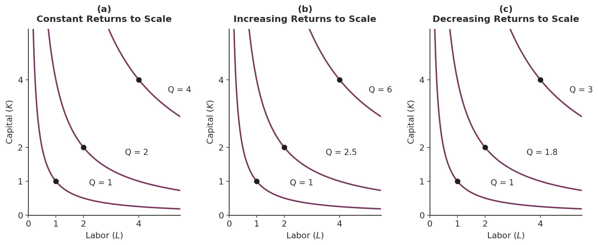
Reading the labels. Walk along the 45° ray from the origin and read the Q-labels: doubling exactly = CRS (Q: 1→2→4); more than doubling = IRS (Q: 1→2.5→6); less than doubling = DRS (Q: 1→1.8→3).
Poll #1 — What kind of returns to scale?
A software firm has the production function \(Q = 5 K^{0.7} L^{0.5}\) (think: cloud server capacity + engineers writing code). When the firm doubles both \(K\) and \(L\), what happens to output?
Doubling inputs multiplies output by \(2^{1.2} = 2.297\) — about 130% more, not 100% more.
Software firms commonly exhibit IRS — fixed development cost spread over more users, plus network effects. CRS is the knife-edge case; firms often sit on one side or the other.
Walkthrough 7.5 — Returns to Scale Numerical Check
Meet Maya, an investment analyst comparing three firms her fund is benchmarking. Each has a Cobb-Douglas technology with different exponents. Her question: "If each firm doubled its capital AND labor, would output double exactly, more, or less?"
Problem & Set up.
For each firm, double inputs from \((K, L) = (1, 1)\) to \((2, 2)\) and classify. Shortcut: for \(Q = K^\alpha L^\beta\), \(Q(2, 2) = 2^{\alpha+\beta}\) — compare the multiplier to 2.
\(\alpha + \beta = 1.0\). Multiplier \(= 2^{1.0} = \mathbf{2.00}\times\). The chapter's gigafactory anchor is CRS.
Verdict: CRS — the calibration locked in for Chs 8–9.
Check. Multiplier in each row is exactly \(2^{\alpha+\beta}\). Verify: \(2^{1.2} = e^{1.2 \ln 2} \approx 2.297\); \(2^{0.7} \approx 1.625.\)
Takeaway. For Cobb-Douglas, RTS is encoded in one number: \(\alpha + \beta\). Software (high \(\alpha + \beta\)) gets IRS; manufacturing gets CRS; resource extraction (binding land) gets DRS.
Calculus Corner 7.1 — Euler's Theorem on Homogeneous Functions
Why bother? Euler's theorem is the bridge between the firm's technology (the production function) and the economy's income distribution. It tells us when paying each input its marginal product exactly exhausts total output — the foundation of every factor-income calculation in macro.
Definition
\(f(K, L)\) is homogeneous of degree \(r\) if
\( f(tK, tL) = t^r \cdot f(K, L). \)
Euler's theorem
If \(f\) is differentiable and homogeneous of degree \(r\):
\( K \cdot MP_K + L \cdot MP_L = r \cdot f(K, L). \)
CRS specialization (\(r = 1\)): \(\quad K \cdot MP_K + L \cdot MP_L = Q.\)
Implication
In a competitive market, \(MP_L = w\) and \(MP_K = r\). Multiplying through: \(\,rK + wL = Q\). Capital income + labor income = total output — no leftover, no shortfall.
Real-life — US GDP, 2024
Labor share (BEA): \(\sim 58\%\) of GDP. Capital share: \(\sim 39\%\). Residual: \(\sim 3\%\) (markups + statistical discrepancy). The two factor shares add to \(\approx 100\%\) — Wicksell's exhaustion-of-product theorem at national-accounts scale.
Two Returns-to-Scale Traps
Two common student mistakes that show up on exams — the math and the world both have catches.
Trap 1 — Euler is iff CRS
The identity \(K \cdot MP_K + L \cdot MP_L = Q\) holds only when the function is homogeneous of degree exactly 1.
Under DRS: \(K \cdot MP_K + L \cdot MP_L = r \cdot Q < Q\) (factor payments fall short of revenue).
Under IRS: \(K \cdot MP_K + L \cdot MP_L = r \cdot Q > Q\) (factor payments at MP prices exceed revenue — one reason IRS industries don't stay competitive).
If you're "verifying" Euler for an \(\alpha + \beta \neq 1\) function and get a contradiction, the function isn't broken — it's just not CRS.
Trap 2 — CRS ≠ "easy to scale"
CRS is a statement about the function, not about the firm's ability to scale.
Tesla can in principle build a second Gigafactory Nevada and double output — if it can also double the $\$6$B capital, the 7,000 workers, the lithium-cobalt-separator supply chain, management bandwidth, and regulatory approvals.
In practice, Tesla doubled the number of plants 2020-2025, not the per-plant output of any single one.
The CRS algebra is a green light at the technology level. Real-world scaling has many other binding constraints.
§7.5 Three Production-Function Families
Cobb-Douglas · Leontief · perfect substitutes
The Curvature of Isoquants — Substitutes & Complements
The shape of an isoquant reveals how easily the firm can swap one input for another at a given output level.
Relatively straight isoquants
Inputs are relatively substitutable — the firm can trade \(K\) for \(L\) at nearly a fixed rate.
\(\text{MRTS}_{LK}\) does not vary much as you move along the curve.
Sharply curved (bowed-in) isoquants
Inputs are relatively complementary — you need both, in roughly fixed proportions.
\(\text{MRTS}_{LK}\) varies sharply — the slope swings from very steep to very shallow over a small range.
The next slide shows both shapes side-by-side. Then the extreme cases — perfectly straight (perfect substitutes) and L-shaped (perfect complements) — on the slide after.
Shape of Isoquants Reveals Substitutability
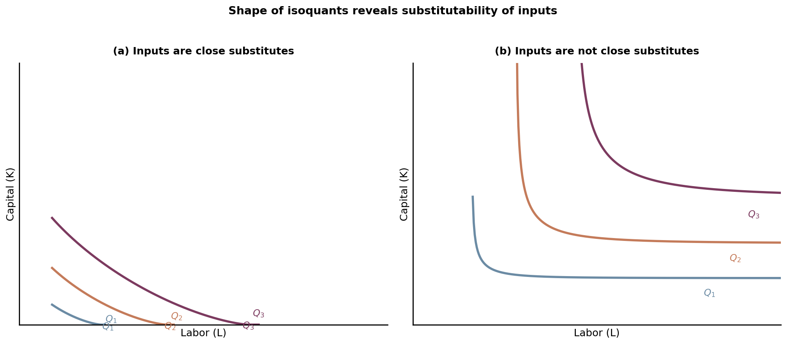
(a) Close substitutes
Gentle, near-linear curves. Capital and labor are relatively interchangeable — e.g., human cashiers and self-checkout kiosks in retail.
(b) Not close substitutes
Sharply bowed, near-L-shape. \(K\) and \(L\) need each other — e.g., commercial aircraft and certified pilots; you can't fly a 737 with extra mechanics.
Two Extreme Cases
Push the substitutability spectrum to its boundaries:
Perfect substitutes
Inputs trade off at a constant ratio. One robot does the work of \(b/a\) workers, period.
\( Q \;=\; a K + b L \)
\(\text{MRTS}_{LK} = b/a\) is constant everywhere on the isoquant.
Isoquants are straight lines.
Example: labor + robots in highly automated tasks (warehouse pick-and-pack).
Perfect complements (Leontief)
Inputs must be used in a fixed proportion. Extra of one without the other adds nothing.
Isoquants are L-shaped with a corner at the fixed ratio.
\(\text{MRTS}_{LK}\) is 0, \(\infty\), or undefined — never a finite intermediate value.
Example: a taxi needs one cab + one driver. Two cabs and one driver still gives you one taxi ride.
Perfect Substitutes & Perfect Complements — Side by Side
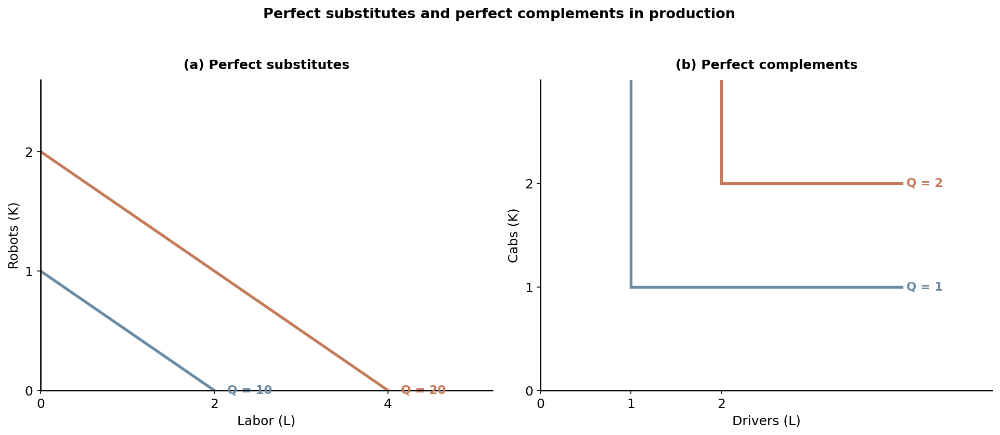
(a) Perfect substitutes — e.g., a warehouse where one robot replaces two workers. Trading 1 \(K\) for 2 \(L\) keeps output constant anywhere on the line.
(b) Perfect complements — e.g., taxis. To run one more cab you need one more driver. Surplus on either arm of the L is wasted.
Application — A Subway Franchise as Leontief
A peak-hour Subway shop targets 150 sandwiches/hour. The recipe is essentially fixed: 3 Sandwich Artists + 1 workstation + 1 topping rail.
A 4th worker adds nothing — no extra topping rail to use.
A 2nd topping rail without a 4th worker also adds nothing.
Inputs must be added in fixed ratio: 1 station for every 3 workers.
At the corner of the L-shaped isoquant: zero substitutability. Slope is vertical above the corner, horizontal to the right — MRTS is either 0 or ∞.
One worker at one topping rail — the binding bundle. Add a worker without a rail and the new worker just stands there.
Leontief in the Wild — Where Inputs Come in Bundles
Uber: 1 driver + 1 vehicle per trip. Adding a driver without a car (or a car without a driver) produces zero rides. The unit production function is strictly Leontief.
Real-world variants
Taxi: 1 driver + 1 cab
Surgery: 1 anesthesiologist + 1 OR + 1 surgeon team
Chip fab: 1 EUV scanner + N support engineers, in a rigid ratio
Aggregation insight. Leontief is rare at the firm level but common at the process level. Aggregating many Leontief processes generates Cobb-Douglas-like smooth substitution at the firm — which is why the next slide's family taxonomy puts Cobb-Douglas in the middle.
Walkthrough 7.6 — Leontief Perfect Complements
Meet Carlos, ops manager at a Bay-Area battery-pack assembly line. Each finished pack needs 2 stations of assembly equipment + 3 worker-hours. Today he has \(K = 10\) stations and \(L = 12\) worker-hours scheduled. His CFO asks: "What can we ship today? And what bundle would deliver 4 packs?"
Problem & Set up.
Leontief technology: \( Q = \min\!\left(\dfrac{K}{2},\, \dfrac{L}{3}\right). \) Compute (a) today's output and the binding input at \((K, L) = (10, 12)\); (b) the bundle on the \(\bar Q = 4\) isoquant.
(a) Output at \((K, L) = (10, 12)\)
Try it first — then click to reveal.
Step 1. Capital allows: \(K/2 = 10/2 = \mathbf{5}\) packs.
Labor is binding; 2 capital-stations sit idle. Carlos: "We can ship 4. Adding a 13th worker-hour does nothing without an 11th station — and vice versa."
(b) Bundle on the \(\bar Q = 4\) isoquant
Try it first — then click to reveal.
Step 1. Need \(K/2 \geq 4 \Rightarrow K \geq \mathbf{8}\).
Step 2. Need \(L/3 \geq 4 \Rightarrow L \geq \mathbf{12}\).
Step 3. Isoquant corner: \((K, L) = (\mathbf{8}, \mathbf{12})\) — L-shaped from there outward.
Carlos's fix: hire 0 more workers but cut to \(K = 8\) stations — same output, less idle capital.
Check. At \((8, 12)\): \(Q = \min(8/2, 12/3) = \min(4, 4) = 4\) ✓ — both legs of the recipe are at capacity.
Takeaway. Leontief = zero marginal substitutability. \(MRTS\) is 0 along the horizontal leg, ∞ along the vertical leg, undefined at the corner. There is no smooth trade-off — just a recipe.
The Three Canonical Families
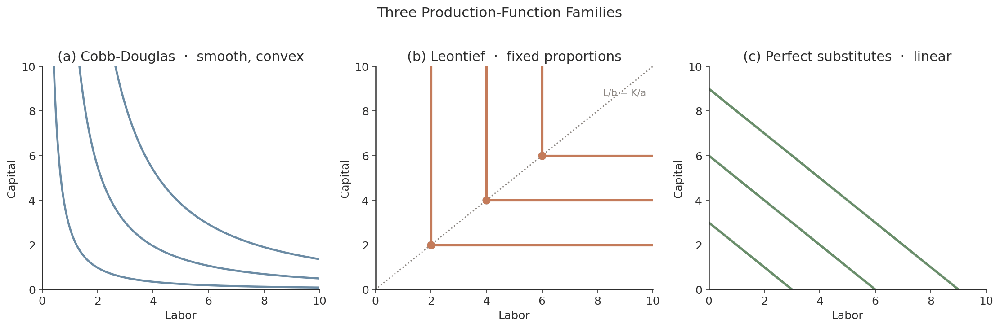
Cobb-Douglas
\(Q = A K^\alpha L^\beta\)
Smooth substitution. Empirical workhorse.
Leontief
\(Q = \min(K/a, L/b)\)
Fixed proportions. Excess of either input is wasted.
Perfect substitutes
\(Q = aK + bL\)
Linear trade-off. \(b/a\) is the substitution rate.
CES nests all three. \( Q = A[\alpha K^\rho + \beta L^\rho]^{1/\rho} \), with substitution elasticity \(\sigma = 1/(1-\rho)\). As \(\rho \to 1\): perfect substitutes; as \(\rho \to 0\): Cobb-Douglas; as \(\rho \to -\infty\): Leontief.
§7.7 What the Data Says
cost shares · labor share decline · automation
The Long-Run Decline in the US Labor Share
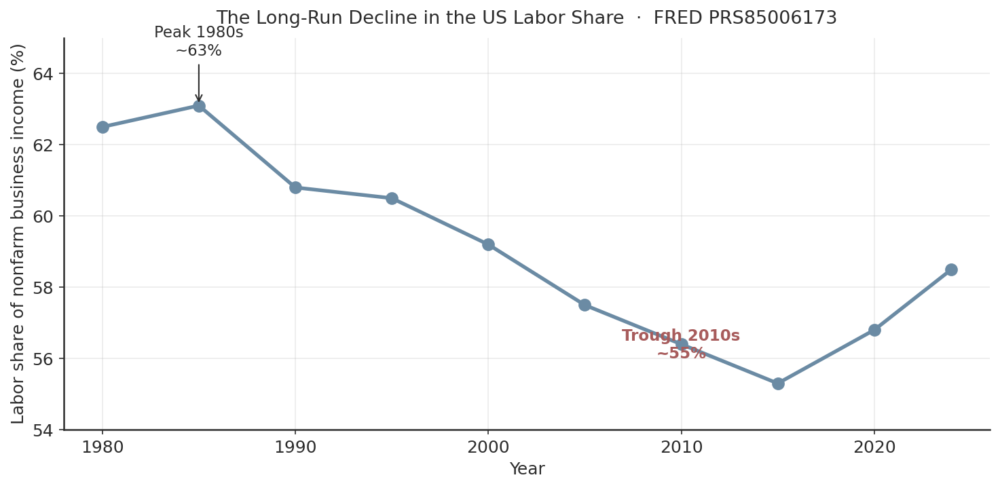
For decades, the US labor share of nonfarm business income was thought to be a structural constant near 65%.
Since the early 1980s it has fallen by ~8 percentage points:
63%
1980 peak
55%
2010s trough
Heads up: a falling labor share under Cobb-Douglas would require \(\beta\) itself to be falling. Empirically, it's the rising markup (Ch 11–12) that drives the trend — not a change in the production technology.
Productivity Dispersion Within Industries
When we write \(f(K, L)\), we implicitly imagine a representative firm. The data tell a different story.
Hsieh-Klenow (2009 QJE)
Within narrow 4-digit manufacturing industries (e.g., "cement," "auto parts"), total factor productivity varies by 2× or more across firms.
The most productive plants in a given 4-digit industry produce roughly double the output per unit of input as the least productive plants — using nominally the same recipe.
Hsieh, C.-T. & Klenow, P. J. (2009). "Misallocation and Manufacturing TFP in China and India." QJE 124(4): 1403–1448.
In Cobb-Douglas notation
Two plants in the same industry:
\(Q_{\text{old}} = 8\, K^{0.4} L^{0.6}\)
\(Q_{\text{new}} = 10\, K^{0.4} L^{0.6}\)
Same exponents, different \(A\). Output gap is a Hicks-neutral shift — the new plant lies on an isoquant that's shifted inward.
Implication. The "production function" is an industry-average abstraction. Real industries are heterogeneous — better empirical work needs plant-level data.
Total Factor Productivity Growth
Even with inputs held constant, firm output grows over time. The only way to explain this is a shift in the production function itself:
\( Q = A \cdot f(K, L) \)
\(A\) is the level of total factor productivity (TFP).
A rise in \(A\) is Hicks-neutral technological change: more output from the same inputs. Geometrically, every isoquant shifts inward.
Example: same gigafactory recipe \((K=3, L=3)\) produces 32 GWh under \(A=10\) instead of \(A=8\) — a 25% TFP gain.
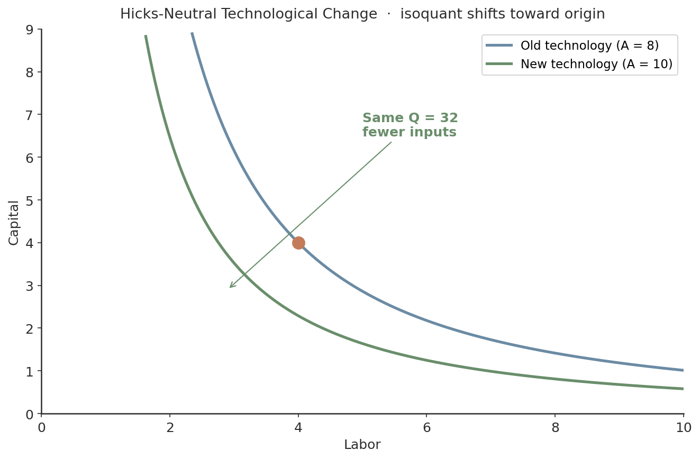
Theory & Data 7.4 — Kerala Fishers and Mobile Phones
Jensen (2007 QJE) studied 15 fish markets along the Kerala coast, 1997–2001. The technology of fishing didn't change. The phones did.
Before mobile phones
Fishers had to guess which of ~15 beach markets to land at
5–8% of catch wasted daily — perishable fish, wrong beach
Price dispersion 0–14 rupees/kg across markets on the same day
Same boats, same nets, same fishers. The friction was information.
A Kerala fisher on the phone — the technological change Jensen identified.
Kerala After Phones — The Hicks-Neutral \(A\)-Shift
After mobile phones (5–10 weeks)
Waste falls from 5–8% → essentially zero
Price dispersion collapses to a tight band
Output per boat +8%; fisher profits +8%
Consumer prices −4%
Same \(K\), same \(L\) — what changed is \(A\). Mobile phones acted as a Hicks-neutral upward shift:
Every isoquant shifts inward; the same boats and nets now produce more saleable fish.
Source: Jensen, "The Digital Provide," QJE 2007, DOI 10.1162/qjec.122.3.879. Popularized in Freakonomics (2009 paperback).
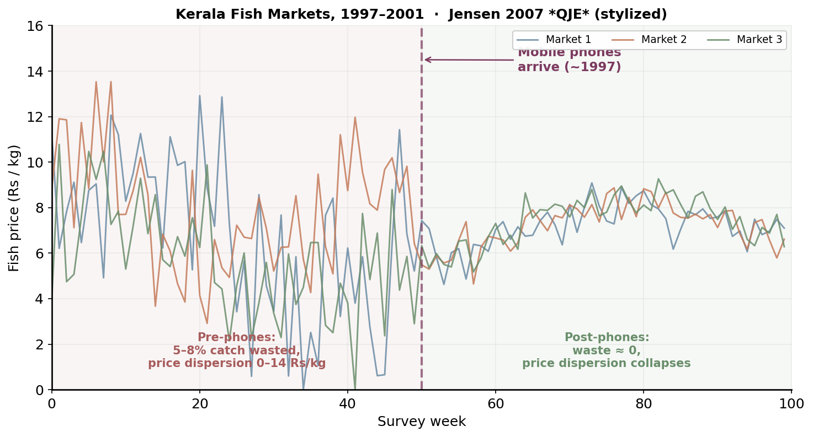
Poll #2 — What economic concept did Kerala phones illustrate?
The introduction of mobile phones in the Kerala fishing industry resulted in which of the following? Same boats, same crews, same nets — but more saleable fish per trip and less waste.
A) Constant returns to scale
B) A diminishing marginal product of labor
C) Total factor productivity growth
D) A decreasing production function
30 sec to vote
Poll #2 — Answer: C) Total Factor Productivity Growth
Same \(K\), same \(L\), more saleable \(Q\) ⇒ the only thing that could have changed is the multiplier \(A\). That's the textbook definition of Hicks-neutral TFP growth.
Why the others are wrong. (A) CRS asks what happens when we scale BOTH K and L — Kerala held both fixed. (B) Diminishing MP\(_L\) requires adding labor — Kerala's L didn't grow. (D) "Decreasing production function" would mean less Q for same inputs — the opposite of what happened.
From Kerala to the US — Does the Same Logic Apply?
Two discussion prompts. Turn to a neighbor for 90 seconds, then we'll compare.
The Kerala output channel
Does the introduction of cell phones in Kerala result in more fish being caught? If not, what changed?
Discussion hook. Same boats, same hours at sea. Catch volume per boat didn't change. But output of saleable fish per unit input rose ~8%. Two channels: less waste + better coordination → the same physical inputs now translate into more revenue-relevant output.
US cell phones & TFP
Do cell phones represent an important source of technological change in the United States? How has widespread mobile use affected US labor-productivity rates?
Discussion hook. Different channel: in the US, the binding friction is rarely "I can't find a buyer." But mobile + cloud have raised TFP in retail (just-in-time inventory), trucking (load matching, Uber Freight), agriculture (precision farming). Empirical TFP gains are real but slower — the US economy was already information-rich.
Bridge to the next slide. The Kerala story isolates the TFP channel in a setting with a huge pre-phones friction. The US story is the same mechanism with smaller, distributed gains — and yet it shows up as the manufacturing paradox: fewer workers, more output.
Application — The US Manufacturing Paradox
Over the last 25 years, US manufacturing shed workers while output grew. How?
Explanation. The production function itself shifted — \(A\) rose — so the same output came from less labor. Durable goods output grew 24% on +38% TFP, with even sharper employment declines. Acemoglu & Restrepo (2022 Econometrica): roughly half of the 1980–2016 US wage-inequality rise traces to task automation.
Two distinct economic motions. Apple's 48-year arc combines (a) movement along the function — scaling \(K, L\) up the same isoquant family — and (b) shifting the function — the frontier moves outward as \(A\) rises (silicon process nodes, software platforms, distribution networks).
Historical Note — Cobb and Douglas (1928)
Paul H. Douglas, a Chicago labor economist (and later three-term US Senator from Illinois), wondered whether US manufacturing data could be fit by a simple two-input function with constant exponents.
He didn't know how to fit it. He took the problem to Charles W. Cobb, a mathematician at Amherst.
Cobb suggested the multiplicative form \(Q = A K^\alpha L^{1-\alpha}\) (CRS by construction). Douglas estimated \(\alpha\) from US manufacturing 1899–1922 and got \(\alpha \approx 0.25\), \(\beta \approx 0.75\).
The original paper
Charles W. Cobb & Paul H. Douglas, "A Theory of Production,"American Economic Review 18, no. 1 (March 1928), 139–165.
Frank Knight at Chicago dismissed early production-function exercises as "economic science fiction."
The form became canonical anyway — because it kept fitting the data, across countries, across decades, across industries.
Labor-share constancy held in the US mid-1930s through mid-1970s. Began falling in the late 1970s. By 2022 the US labor share is at its lowest level since the Great Depression (Karabarbounis 2024 JEP).
Douglas later served three terms in the US Senate (1949–1967), chairing the Joint Economic Committee.
Chapter Summary
Production function
\(Q = f(K, L)\) maps inputs to maximum feasible output. Free disposal + convex isoquants are the standard assumptions.
Marginal products
\(MP_K = \partial f/\partial K\), \(MP_L = \partial f/\partial L\). Cobb-Douglas: \(MP_i = \text{share}_i \times Q/i\). Diminishing in own input when other is fixed.
MRTS
\(\text{MRTS}_{LK} = MP_L/MP_K\). Slope of isoquant. Cobb-Douglas: \((\beta/\alpha)(K/L)\) — diminishing as you slide down the curve.
Returns to scale
Cobb-Douglas shortcut: \(\alpha + \beta\) vs 1. Euler's theorem under CRS: \(K \cdot MP_K + L \cdot MP_L = Q\).
Three families
Cobb-Douglas (smooth), Leontief (fixed proportions), perfect substitutes (linear). All nested by CES with \(\sigma = 1/(1-\rho)\).
Technology shifts
TFP growth \(Q = A f(K,L)\) shifts isoquants inward. Explains the US manufacturing paradox — fewer workers, more output.